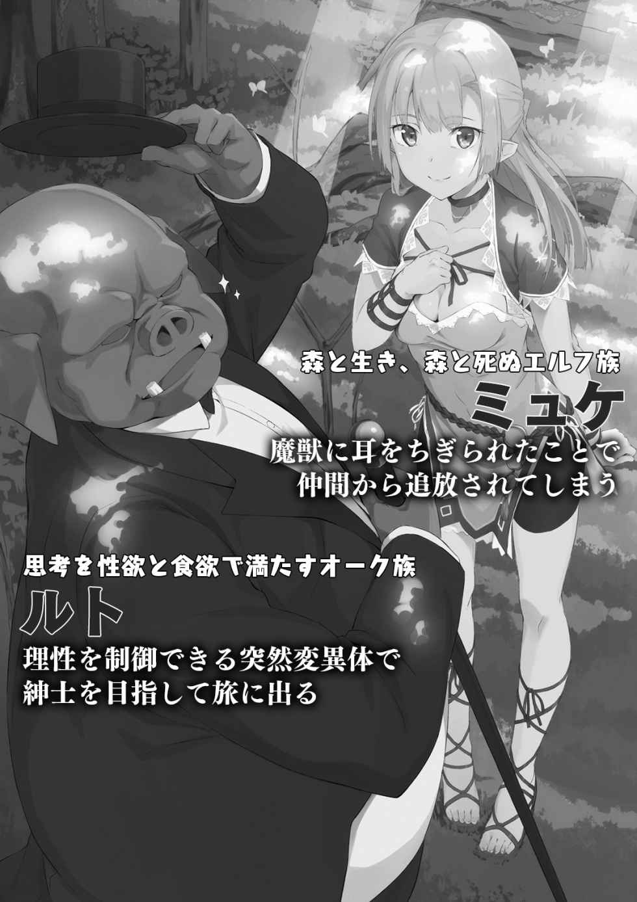
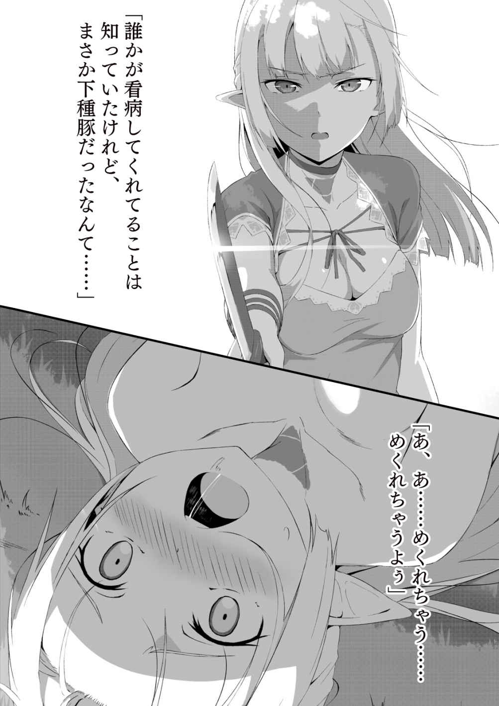
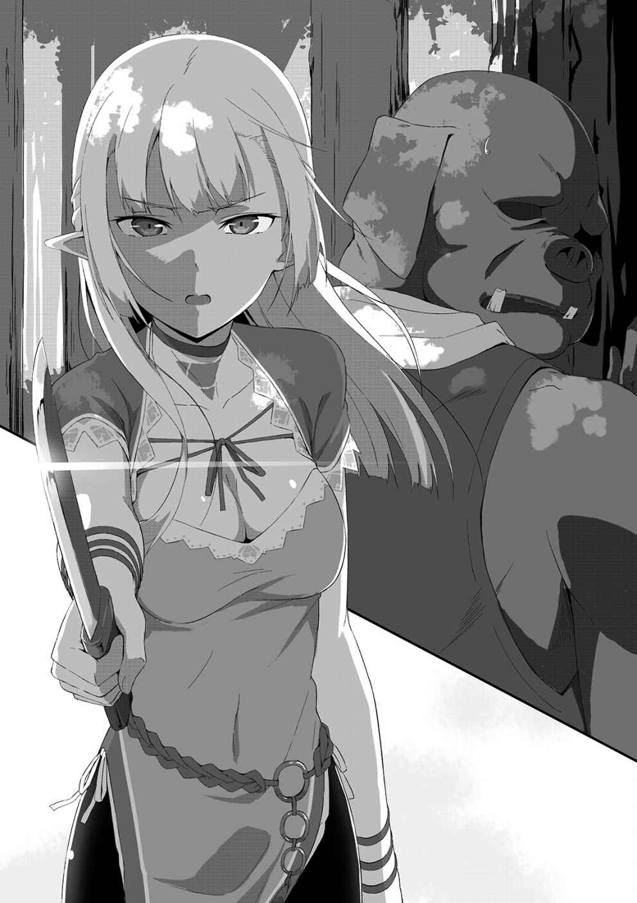
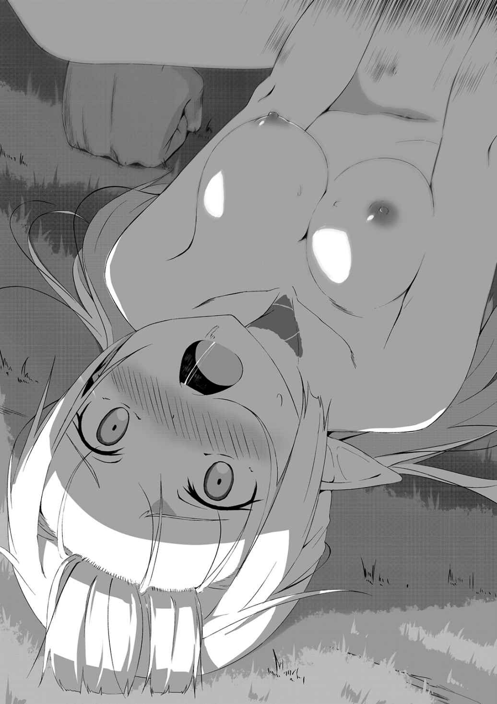
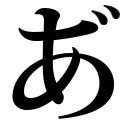
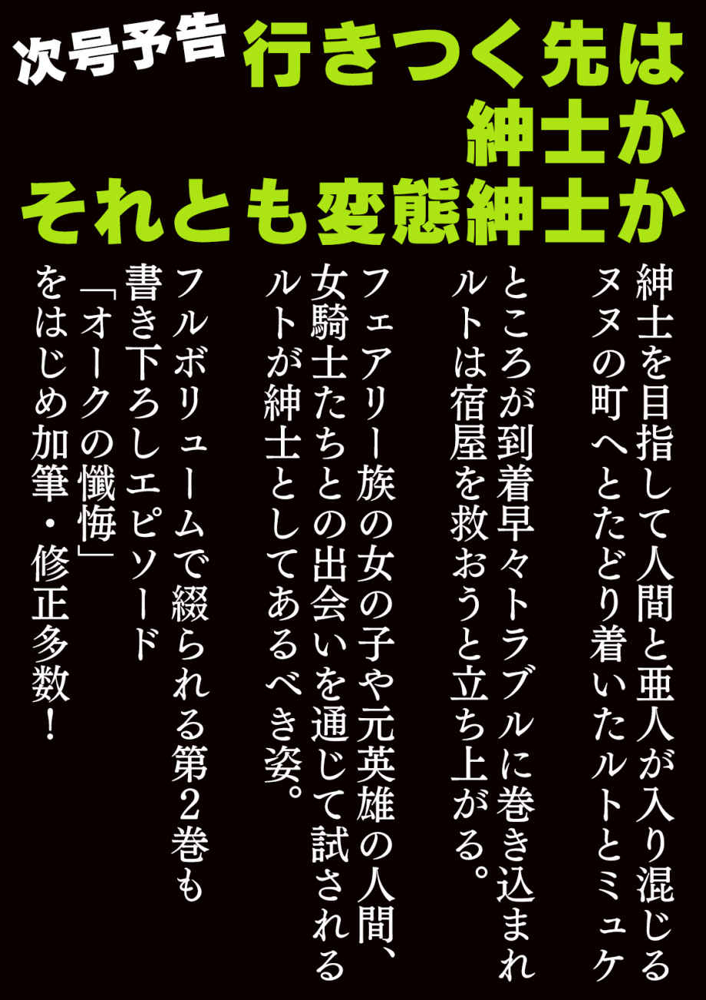
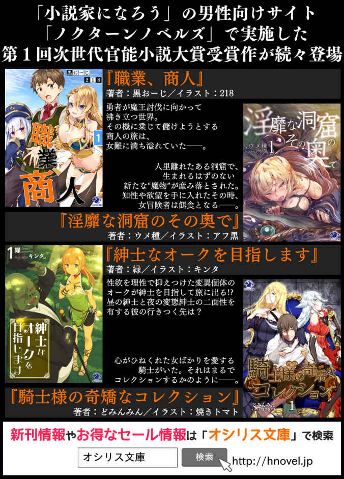

| 紳士なオークを目指します(1)<紳士なオークを目指します> (オシリス文庫) | |
| 緑 | |
| (2015) | |
| Tags: | ライトノベル |
紳士 なオークを目指 します（１）
著者／緑
イラスト／キンタ
オシリス文庫
本作品の全部または一部を無断で複製、転載、配信、送信したり、ホームページ上に転載することを禁止します。また、本作品の内容を無断で改変、改ざん等を行うことも禁止します。
本作品購入時にご承諾いただいた規約により、有償・無償にかかわらず本作品を第三者に譲渡することはできません。
本作品を示すサムネイルなどのイメージ画像は、再ダウンロード時に予告なく変更される場合があります。
本作品は縦書きでレイアウトされています。
また、ご覧になるリーディングシステムにより、表示の差が認められることがあります。
本書の内容はフィクションであり、登場する団体・店名・人物などの名称はすべて架空のものです。


醜い豚顏。肥え太った体。半径３メートルは近寄れない体臭。
それがオークです。豚人間です。人間である要素は二足歩行と下半身の槍くらいしかありませんが、なぜか豚人間と呼ばれます。
ぼくが思うに、欲望に忠実だから豚人間って呼ばれるんでしょうね。人間って怖いですね。
思考の半分を性欲、残りの半分を食欲で満たしているオークに生まれたぼくですが、父親とは違ってなぜか性欲食欲以外にも思考を割くことができるようです。
おかげで知識を蓄えることができました。もっとも、その知識の元はぼく以外のオークが連れてくる人間たちの所有物だけなので、頭がいいとは口が裂けても言えません。
さて、そんなぼくはいま、人間たちが捕まっている牢屋の前に来ています。
錆びた鉄格子はいかにも不潔そうで、触るのだって躊躇 ってしまうくらいです。でもそれだけなら我慢できます。いちばんひどいのは臭 いです。
オークの思考の半分は性欲でできています。なので当然、彼らは常に下半身をイキリ立たせています。でも不幸なことに、オークにメスは生まれません。ではどうやって性欲を解消するのか。
答えはひとつです。どこからか連れてくるんです。連れてきて、この牢屋に入れて、楽しみたいときだけ鍵を開けてはハッスルして帰る。
たいした性欲魔人だと、同族ながらに呆 れてしまいます。
連れてこられたメスは毎日のように襲われてしまうので、逃げる体力なんて当然ありません。それどころか、豚面の化け物に犯されているせいで精神を病んでしまうメスが続出します。
おっと、いつまでもメスだと呼ぶのは失礼ですね。女性です。人間の女性。
オークはアホですから、いつの間にか牢屋が空になっていても気づくことはありません。なのでぼくは隙を見て、人間の女性たちを逃がすことにしています。
ぼくはほかの仲間のように、色欲に狂ってはいないのです。確かに興味はありますし、女性の艶 めかしい肢体を見ると本能が疼 くこともあります。
でも、無理やりなんて紳士じゃないのです。
ぼくは、連れてこられた人間の持ち物に絵本を見つけたことがあります。
その絵本は、真の紳士がなんたるか、ということが描かれていました。シルクハットに燕尾 服。種族柄、体格の大きいぼくではそれらを着用することはできませんが、心は紳士になろうと決めているのです。
だから困っている女性には手を差し伸べます。
牢屋の扉を開けたオークを見て、裸でうずくまっていた女性がまたか、という顔をしました。あきらめが漂っていて、体にこびりついた液体が痛々しいです。
拘束具の類がつけられていないのは、オークがアホだからです。とりあえず閉じ込めておけばいいだろう、なんて思考ができるだけでもぼくは驚きでした。
怯えとあきらめが混じる女性がひとり、牢屋の隅からゆっくりと出てきました。ほかのオークがさんざんっぱら暴力を振るったので、抵抗は無意味だと理解している様子でした。
褐色肌で肉感的な女性にそそられるものがありますが、ぼくは紳士です。目の前までやってきた女性に、ぼくはボロ布をかけました。もともとはちゃんとしていた服を渡したのですが、ほかの性欲魔神たちが辛抱たまらんと破り捨ててしまうのでこんなものしかないのです。事前に洗っておいたので、臭いはついていないと思います。
「綺麗な服の類はないのでこれで我慢してください」
「え......？」
しゃべるオークを初めて見たようで、女性は驚いた顔をしていました。流暢 にしゃべれるのは練習の成果です。以前にも、捕まっていた女性を助けるときにしゃべったのですが、片言だったので怯えさせてしまったようでした。
「いまのうちに逃げてください。ほかのオークたちは疲れて寝てますから、いまのうちに」
両手を挙げて敵意がないことを示しても、女性はぼくを睨 んだままでした。当然だとは思いますが、頑張って言葉を覚えた身としては少し悲しくもあります。
罠だと疑っているようでしたが、ぼくが動かないとみるや、女性はぼくたちの住居から出ていきました。
うん、これでぼくも紳士に近づいたと思う。
褐色の肌が見えなくなるのを見送ってから、ぼくは壁の隅に隠しておいた愛槍を拾い上げます。
じゃあ、壊れてしまった女性たちを助けにいきましょうか。
濃密な鉄の臭いが鼻腔を刺激しますが、もう慣れてしまいました。
精神が壊れてしまった女性を救うついでに、彼女たちをこんな目に遭わせたオークたちにお仕置きをしてから、ぼくは巣を出ました。
いろいろと準備してきたおかげで、今日からぼくはひとりで生きていくことができるはずです。
性欲魔人のオークとは違う、紳士なオークをぼくは目指そうと思います。
＊
住処 だった穴倉から離れて、ぼくは森の中を歩いていました。
ここはよく肉を獲るために足を運んでいたので迷うことはないけれど、少し厄介な種族が根城にしているんです。
エルフ。
耳が長くて、ぼくたちオークの性欲が最大限に引き出される美貌の麗人たち。
森と生き、森と死ぬ彼女たちはオークを虫のごとく嫌っていて、姿を見るだけでも矢を射掛けてくるのです。
とはいえ、それは決して理不尽な行為ではないのです。
オークにとって、エルフはいちばん強い欲情の対象です。そのせいでひとりでいるエルフは軒並みオークにさらわれてしまうのです。もちろん、ぼくはそんなことをしませんが、オークはオーク。ぼくも彼女たちの敵なのです。
なので、ぼくは深緑色のクロークを羽織って、豚の顔をフードで隠しています。夜のいまなら色がカモフラージュになるでしょう。
しばらく歩いていると、木の根元になにかが転がっているのが見えました。近づいてみると、なんとエルフの少女が倒れていたのです。
暗いせいで容姿はわかりませんが、尖 った耳が特徴的です。あまり顔を見ないようにしながらエルフに触れてみると、しっかりと息をしています。
ぼくは気づきました。
この少女の片耳、半ばからちぎれています。
エルフにとって、尖った耳は魔力の収集に必要不可欠な部位であるほかにも、彼ら種族の誇りで、片耳でも失ったエルフは集落から追い出されてしまうようです。
おそらく、この少女は片耳を失ってしまったがゆえに追い出されてしまったのでしょう。
排他的な種族であり、内外どちらにも厳しいのがエルフです。魔法が使えない、耳がない、など、欠陥がある仲間は容赦なく切り捨てるのでしょう。
見たところこの少女の耳は今日の朝ごろにちぎれてしまったようで、痛々しい傷口が覗いています。にも関わらず、少女の仲間であったはずのエルフは治療するどころか、彼女を追い出したのです。
しかも、それだけではありませんでした。
耳の治療をしようと少女を抱きかかえると、痛がるように身じろぎしたのです。もしやと思って触診すると、あちこちの骨にヒビが入っていました。
元仲間のエルフたちは、この子を痛めつけてから追放したのでしょう。
彼らを破滅させるのはあとです。いまはこの子の手当てをしなければ。
ちぎれた耳を、人間が持っていた救急キットの包帯で止血してから抱え上げます。
かなり軽いのは種族柄でしょうか。ぼくはなるべく揺らさないように少女を運んでいきました。
人間がヌヌ大森林と呼ぶこの森は未開拓の土地です。エルフやオーク、そのほかにもさまざまな種族が暮らしている森ですが、人間だけはよそからやってきます。
なんでも、大量の木々と未知の存在が跋扈 するこの土地は、人間にとって魅力的だそうな。そのため、冒険者という職業の人間が依頼を受けてやってくるらしい。ぼくの仲間はその人間たちをさらっていたみたいです。
要領を得ないアホな仲間の言葉を頑張って読み取ったので、あまり詳しくは知りません。ただ、仲間が人間をさらってきたように、見目麗しいエルフをさらう人間も多くなっているようです。ぼくにそのことを教えてくれたオークは、性欲処理の相手が増えて嬉 しそうでした。
人間にとって未開の地であるこの森も、ぼくら森に暮らす種族からすれば庭のようなものです。とくにぼくは、暇さえあれば女性相手に腰を振る仲間たちとは違って遠くまで調べていました。森から出る道も知っています。
エルフの少女を抱えてやってきたのは湖畔です。窪地に存在しているので、知る人ぞ知る、といったところです。
雨をしのげそうな木のうろを見つけて少女をその中に寝かせました。巨木ですがぼくは体が大きいので入れそうにありませんでした。
見つけた当初より具合が悪そうな少女は高熱を出していました。全身の打撲のせいでしょう。綺麗 な布切れを荷物入れから出して、湖に浸して少女の額に乗せました。
しばらくはここで看護することになりそうです。
『紳士の心得。困っている女性や子供には手を差し伸べよう。紳士への第一歩です』
ぼくがその本と出会ったのは本当に偶然で、一歩間違えれば別のぼくになっていたことでしょう。
別のぼく。それはすなわり、オークらしいぼくです。
食欲と性欲が混ざっているような、下半身でものを考えているような、そんな存在になっていたかもしれません。
仮にオークらしくなっていなくても、いまのぼくには絶対になれなかったことでしょう。
淫靡 な空気に満ちた穴倉に耐えられずに、外へ気分転換しようと思い立ったときです。
最近、人間の女性が捕らわれてきて、それからは毎日のように激しい情事の音が寝ても覚めても続いていました。
いくら生まれたときからともにいるとはいえ、同族の下半身をいつまでも見ていたいわけではありません。しかも、どういうわけかぼくは仲間たちとは違って、自制ができるようなのです。もしかしたら、毎日のように繰り広げられる仲間たちの交尾に、辟易 としたものを感じたのかもしれません。
捕まった女性には、とくになんら感情は覚えていませんでしたが、毎日毎日、性欲旺盛なオークの相手をさせられるのはさすがにかわいそうと思えてきたところです。
穴倉を出る際、仲間にいらないものを処分してくれ、と手渡されたものがありました。
ぼくたちが使うには小さい人間の男用の衣服が数枚に、びりびりに切り裂かれた女性用の衣服。それに、本と呼ばれる紙束です。
仲間たちはこういった人間の持ち物に興味がないらしく、使うも捨てるも好きにしろとぼくにすべて渡してくれます。その代わり、いつも取り合いになる人間の女の下着というものを譲っているので、当然といえば当然かもしれません。
先に衣服を適当な穴に埋めて、切り株に座りました。
勉強してはいましたが、人間の言葉は複雑であまり使いこなせてはいません。
仲間たちは人間の文化というものに興味はないようで、女の尻ばかりを追いかけていました。
今日見つけた本は絵ばかりが描かれていて、たいへん読みやすいものでした。
『しるくはっと』とかいう縦長の帽子に、『えんびふく』という、尻尾のようなものが飛び出た人間の服に、『すてっき』という柄の曲がった杖。
これらを身に着けた『しんし』という存在が、世界中の女を、いえ女性を助けるお話でした。
ぼくは、この絵本に天啓というものを得た気がしました。
だって、格好いいじゃないですか！
泣いている女性の涙を止めるため、明日に絶望する女性の未来を守るため、『しんし』はどんなことにでも立ち向かう。それはたぶん、ものすごくたいへんなことなのでしょう。
ですが、ぼくはその生き方がすごくすごく、格好よく見えたのです。
ぼくたちオークは、確かに女性を大切にしない種族です。それどころか、女性の泣き顔にたいへん興奮して、ますます燃え上がってしまうような困った種族です。それはたぶん、性癖としては誰にだってあるのだと思います。
ぼくも、最初はなぜオークが嫌われるのかわかりませんでした。
しかし、考えてみれば当然です。
オークは泣き顔を求めています。ですが『しんし』は違います。決して泣き顔を求めたりはしません。受け止めようとします。
その結果、『しんし』は求められるのです。些細 なようでまったく違う、『求めること』と『求められること』。
その違いが、ぼくたちをオークたらしめているのではないのでしょうか。
この絵本には、『女性は宝を生み育む存在である。次代への花を咲かせるのは女性にしかできないこと』と描かれていました。
そうです。ぼくたちオークにはメスがいません。種を守るには、女性の存在が必要不可欠なのです。
もし仮に、この世界に女性が存在しなかったときは真っ先にオークが絶滅するでしょう。
そうでなくても、女性を泣かせることは格好悪いことだと思います。確かに胸が熱くなることもありますけど、余計に泣かせたいとまでは思えません。
仲間たちは女性の泣き顔が大好きなようですが、そんな仲間たちと暮らしていたことで反面教師にしたのかもしれません。
正直なところ、ぼくにもわかりませんでした。ですが、『しんし』の生き方は、目指してみたくなるくらい憧れるものだったのです。
ぼくがエルフの女の子を見つけてから、３日が経ちました。
その間、ぼくは彼女の看病をして過ごしていましたが、何度も危ない場面があって困りました。
エルフの美貌はオークの性欲をこれ以上ないほど昂 ぶらせます。意識的に顔を見ないようにしていましたが、寝返りを打つ少女の首筋が露 わになったときや、大量の汗をふき取るときに触れた肌の感触は危ういものでした。
おかげでぼくの額はいまも乾いた血が貼りついています。
そういえば、このエルフの女の子はすでに成人しているようでした。首筋から鎖骨のあたりにかけて三角形の痣が浮かび上がっていると、成人しているという証になるそうです。これは仲間が教えてくれたことですが、彼らは本当にエルフのことには詳しいです。
懸命に看病したおかげか、少女の熱はだいぶよくなったようで、いまだ目を覚まさないながらも、すりつぶした果物や飲み水はしっかりと嚥下 してくれるようになりました。
湖の水で濡らした布を少女の額に乗せて、愛用の槍を手に取りました。
狼です。
弱っている者の匂いをかぎ分けることができる森狼は、病人の天敵です。とくに、いまのエルフの少女のように寝たきりの者は恰好の獲物でしょう。
これで森狼が襲ってくるのは６回目です。
幸い、少数で襲ってきたのであっさりと倒すことができました。はぐれだったのでしょうか。
眉間を貫いた槍を引き抜くと粘着質な脳漿 がずるりと溢 れてきます。
森狼の肉は筋肉質で食用には向いていません。血の匂いでほかの獣を招きかねないので、森の奥に捨ててきましょう。
湖畔に戻ると、エルフの少女がいませんでした。うろの中で寝ていたはずなのですが、姿も影もありません。まだ起き上がれるような調子ではないはずなのですが......。
「あーっと、ぼくはあなたに危害を加えるつもりはありません」
「信じられるとでも？」

首元に突きつけられたナイフが鈍く光っています。
さすがエルフです。まったく気配を感じませんでした。流暢に話すぼくに驚く気配がありましたが、隙になるほど大きな動揺ではありません。人間とは違ってエルフはオークが少なからずしゃべれることを知っています。
背後からはすさまじい殺気が送られてきて、危うく槍を突き出してしまうところでした。
「ここはどこ？」
「森の西にある湖ですよ。倒れていたあなたを見つけて、ここまで運んできました」
「誰かが看病してくれてることは知っていたけれど、まさか下種豚だったなんて......」
オークに看病されたことがそんなにショックだったのでしょうか。それとも、眠っているうちにあれやこれされたと勘違いしているのでしょうか。
ぐいと、首にナイフがめり込みました。
「豚に汚されたとあってはもう生きていけませんね......せめて道連れに」
やっぱり勘違いしてるようでした。
「あの......ぼくはその、なにもしてませんよ？」
言ってから後悔しました。誰がオークの言い分を聞いてくれるというのでしょう。相手は豚嫌いで有名なエルフなのに。
「確かにぼくはオークですけど、なにかしていたらあなたはいまごろ檻の中ですよ？ 少なくとも、ぼくの仲間はそうするはずです」
「それは......」
「ぼくが普通のオークなら、あなたはもうぐっちゃぐちゃでどろっどろになって動けないと思います」
性欲魔人であるオークなのに、自分の体は綺麗でなにかされた形跡もないのです。信じざるを得ないでしょう。あとひと押しです。
「ぼくはオークですが、紳士を目指しています。合意がないのに乱暴なことは絶対にしませんよ」
沈黙があって、少女はナイフを離してくれました。ただ、大笑いしているのが腑 に落ちません。
「ふふっ......オークがっ、オークが紳士なんて無理に決まってるじゃない！ あーダメ、おっかしい。確かにこんなオークなら手を出されることはないわね」
理解してくれたようですが、なんとなく気に食わないです。
ぼくの背後から離れた少女の顔を直視しないよう、目線を逸らしていると、彼女はまた笑いました。
「あなたなら紳士になれるかもね、ぷくく」
遺憾です。
＊
会話を経て、ほんの少しは警戒を解いてくれたのでしょうか。やはりまだ万全とは言いがたいようで、気丈な表情の中に苦痛の色が見え隠れしています。
ミュケと名乗ってくれたエルフの少女の体を支えようとしたのですが、振り払われてしまいました。
「助けてくれたことには感謝しているし、乱暴しなかったことも信じているけれど、それとこれとは話が別なの。触らないでくれる？」
辛辣でしたが、ぼくたちオークの認識はそんなもんです。隙を見せたら犯される、それくらい警戒してくれたほうがぼくも逆に安心できます。べつにミュケが恩知らずという話ではなくて、当然の反応なのです。
頭の中がピンク色のオークならなんとも思わなかったでしょうし、ぼくもオークです。でも、助けた相手にそれを言われるとなかなかつらいものがあります。
「あ......ごめんなさい」
思わず肩を落としたぼくに気づいたミュケが申し訳なさそうな顔をしますが、仕方のないことです。オークは婦女子の敵なのですから、甘んじてそれを受け入れる覚悟はあるのです。
「あの、ルトには本当に感謝しているの。助けてくれたこともそうだし、ほかのオークとも違うこと、ちゃんとわかってるつもりなんだけれど......」
「そんな泣きそうな顔しないでください。わかってますよ。ちゃんとわかってます」
......優しい子だ。もはや反射的に距離を取ろうとするのでしょう。体にオークの恐怖が染みついているのでしょう。それでも彼女は泣きそうになりながら、ぼくの手を握ってくれました。
この森で暮らすすべての種族から、オークは嫌われているのです。それこそ、骨身に染みるくらい。
気落ちした様子で、ミュケは木のうろに入りました。
＊
まだ本調子ではないミュケが目覚めてから、さらに３日が経ちました。
本人が目を覚ましたのでぼくは食べ物と調達と、布を水で濡らすことくらいしかやることがなくなりました。
ミュケが回復しつつあるので森狼も寄ってこなくなりました。
以前のこともあって、ぼくと彼女の距離は微妙なものになっています。話すことはありますが、なんとなくぎこちなくて、絶対に触れ合うことはありません。
とはいえ、ミュケが快復し次第別れるつもりなので、ちょうどいいのかもしれません。
湖から水を汲んで、布を濡らします。濡らした布では少々物足りませんが、まったく体を拭かないよりははるかにマシでしょう。
ごしごしとこすりますが、ぼくに目立った汚れはありません。それもそのはず、ぼくは綺麗好きなのです。紳士はみな清潔感溢れると本にも書いてありましたから、ぼくも毎日身を清めることにしています。
そもそも、この湖畔を見つけたのも体を洗うためでした。
ミュケが目を覚ましたので、ぼくは本能に振り回されることがなくなりました。汗だくのミュケの体を拭こうとしたときなど、興奮で頭が割れそうでしたから。
ですが、ミュケが動けるようになった以上、我慢する必要はなくなりました。彼女は自分で体を清められるようになりましたし、水浴びするときもぼくは森の奥へと行っています。女性の水浴びを覗くなんてこと、紳士として恥ずべき行為です。
全身を清め、予備の服に着替えていままで着ていた服を洗ってから、ミュケが休む木のうろへ戻りました。
「......水浴びするオークなんて最初は信じられなかったけど、慣れてくるものなのね」
「ぼくしかいないと思いますよ。オークは基本的に水浴びなんかしませんから」
オークの体臭を嗅いだことがあるのか、ミュケは顔をしかめながら頷 きました。
「ところで、ミュケはこれからどうするんですか？」
控えめに聞いたつもりでしたが、彼女は眉を下げてしまいました。
「どうしようかな......もう帰る場所はないし、行くところもないから......」
「......同じ仲間なのに、どうしてでしょうね」
少なくとも、オークたちは仲間を無下にはしません。同じ種族であれば、みな仲間だと、オークは思っているのです。
「エルフの魔法はね、誇りなのよ。この耳も、魔法が使えるって誇りのひとつ。失えば亡霊とまで呼ばれてしまう。だから、誇りを穢 した同族のことは許せないんでしょ」
私も昔は同じだったから。そう言って、ミュケは黙り込んでしまいました。
ぼくたちは黙り込んでしまいます。
しんみりとした雰囲気に耐えきれず、口を開こうとすると、突然森の奥がざわめきました。
ミュケも気づいたのでしょう。以前ぼくに突きつけたナイフをつかんで、目を凝らしています。それにつられて、ぼくも傍らの愛槍をつかみました。
がさり、と窪地との境界の茂みが揺れ、現われたのは耳が長く、オークをもっとも嫌うエルフでした。
あわててミュケを隠そうとしましたが、木々の乱立する薄暗い森を生きるエルフの視力は、それよりも早く彼女を見つけてしまったのです。
「やはり生きていたか、見苦しい。素直に野垂れ死にしていればいいものを......」
「......」
唇を噛みしめてうつむくミュケは、黙したまま罵倒を受け入れていました。
どうしてなにも言い返さないんですか。
「ふん、まぁいい。長からの命令である。ここを貴様の墓にしてやろうぞ」
どうしてうつむいているんですか。
「おい！ 亡霊を見つけたぞ！」
男のエルフがそう叫ぶと、後続が姿を現わしました。皆槍で武装していて、人数は４人です。
「ったく、手間取らせるなよな？ 誇りを失くした亡霊の分際で！」
吐き捨てるように別のエルフが言います。
ミュケがなにか悪いことをしたのでしょうか？ 彼女は狼に襲われてしまって、耳を半分失ってしまったのです。彼女は追い出されるようなこと、なにもしていないはずです。
なのに、誇りだなんだと、くだらない。
「泣かないでください」
嗚咽を堪 えるミュケに、できるだけ優しい声をかけました。震える肩を撫でてあげたかったのですが、ぼくのようなオークではきっとダメでしょう。
「ひっく......逃げて」
「え......」
「いますぐここから離れるの。そうすれば巻き込まれることはないわ」
もう、我慢はできません。
「逃げませんよ。ぼくは逃げません」
「なんでっ......」
「泣いている女の子を置いて逃げるなんて、紳士にあるまじき姿です！ ぼくは戦います！ きみを守ります！」
手の中の槍をぎゅっと握って、ぼくは立ち上がりました。エルフたちの位置からではぼくの姿は見えなかったのでしょう。突然現われたオークに驚きと嫌悪の表情を浮かべています。
「あなたたちは、ミュケを薄汚いと言ったな!? 耳を失ってしまった同族を見捨てる奴らなんて、ぼくたちオーク以下のクズだ！ ぼくたちオークは決して仲間を見捨てない。だが、ぼくたち以下のおまえらこそエルフの誇りを穢す薄汚いエルフだ！」
言い切ると同時に、槍を構えて突貫します。ぼくの身長と同程度の槍は、エルフたちの短槍よりもリーチがあり、その分有利です。しかし、彼らには魔法がある。
猛烈な勢いで迫るぼくに警戒したのか、エルフのひとりが手を突き出して、拳大の岩石を生み出しました。ひとつではなく、エルフの正面を塞ぐようにいくつも浮かんでいます。
「汚らわしい豚め！」
言葉とともに、すべての飛礫が飛来してきました。いくら鍛えているとはいえ、直撃を喰らえば、簡単に体を貫かれてしまうでしょう。魔法とはそういうものなのです。
ですが、ぼくもただ黙っているわけではありません。両手で握った槍を高速回転させると、飛来してきた飛礫を弾き飛ばしました。
絶えず放たれる岩石が回転する槍に跳ね返されて、先頭に立って魔法を放った男の頭部をいともたやすく打ち砕きました。脳漿と血液が撒き散らされて、残るエルフたちが息を飲んだようでした。
その動揺が命取りです。
驚きのあまり、飛礫を飛ばす手を緩めてしまったエルフに接近すると、その喉をひと突き。噴き出す血を無視して、引き抜くと同時に槍を薙 ぎます。
喉を突かれたエルフが崩れ落ちるのと同時に、隣のエルフの頭が冗談のように舞うのをぼくは無感情に眺めて、最後のひとりへ愛槍を投てきすると、狙いは寸分違わず、槍はエルフの心臓に突き刺さりました。
これで終わりです。脅威である魔法も、使われなけばどうということはないのです。
仰向けに倒れたエルフから槍を引き抜いて血振るいをすると、ぼくはミュケの元へと戻りました。
かつての仲間とはいえ、同族を目の前で殺したのです。叱責されても仕方がないと考えていたのですが、彼女は、ミュケは涙をこぼしながらぼくに抱きついてきました。
＊
ミュケが落ち着くまで、ぼくはされるがままでした。
エルフの天敵といっても過言ではないオークに抱きつくのは相当な苦痛では、と思ったのですが、泣きやんだミュケはむしろ嬉しそうでした。
「あの、変わりすぎでは......？」
耐えられずに聞きました。オークのぼくとしては、エルフの美貌が間近にあるだけでムラムラとしてしまうのですが、それをなんとか抑え込んでいるところです。
「言ったでしょ？ エルフは誇りがすべてなの。誇りを失ったエルフは同族とは見なされないし、その末路もひどいものよ」
「......わざわざ殺しにくるくらいですからね」
「素直に殺してくれるだけならまだ優しいわ。私を追いかけてきたエルフ、全員男だったでしょ？ 両耳を削ぐのはあたりまえ、ただ乱暴されるくらいならいいほうなの。捕まれば最後、尊厳もなにもなくなってしまうわ」
ぼくはオークですから、想像に容易です。体どころか心まで辱めるつもりであのエルフたちはやってきたということでしょう。
「でもね、ルトのおかげで私は誇りを奪われずに済んだ。それだけじゃなく、いまも私は生きている。だ、だから、その......あり、がとう」
感無量でした。ぼくは初めて、誰かに感謝されたのです。それも、オークのぼくが、エルフのミュケに、です。紳士としての本懐を果たしたような気がしました。
「紳士を目指していますからね。当然ですよ」
「そうね、ルトは紳士だものね」
初めて見たミュケの笑顔は、脳裏に焼けつくほど美しくて、背筋がぞくぞくと震えました。
この笑顔を、女の喜びで歪ませてやりたいと心の底から思いました。
夜になり、ぼくたちは夕飯の準備に取りかかりました。
昨日とは打って変わって、なにかとくっつきたがるようになったミュケに下半身の槍が暴れそうになるのを堪えて、ぼくは愛槍の手入れをします。
ミュケはいま、ぼくが採ってきた山菜や兎 の肉を調理しているので、しばらくこちらに来ることはないでしょう。
エルフの血がこびりついた穂先と柄に、湖の水をぶっかけて、布でこすります。それが終われば、鋼鉄製の穂先に薄く油を塗ります。あまり手入れの知識はありません。人間たちは基本的に自分では手入れせず、鍛冶屋に任せているようなので、手入れ方法の記された書物は見たことがありません。
これで、愛槍のほうは終わりです。
一度背後を振り返って、ミュケが鍋をかき回しているのを確認すると、ぼくはズボンを下ろしました。
正直に言って、限界です。
オークの本能を強く刺激する顔立ちに、まるで恋人を相手にするような心の開き方。辛抱たまらんといった状態ですが、ぼくは紳士です。性欲のまま襲いかかることはしません。ですが、ぼくも男なので溜まるものは溜まります。
ミュケが目覚める前は処理がずいぶんと楽でした。
ズボンを下ろした状態でもう一度背後を確認すると、彼女はまだ鍋の前にいました。これなら平気そうですね。
張り詰めたイチモツを婦女子の傍 でしごくというのは、なかなかに緊張します。たしか、露出がどうのとか紳士教本には書かれていましたが、ぼくはまだそこには至らず緊張するだけです。
オーク族の平均よりも少しばかり長さが足りないぼくのイチモツですが、代わりにエラの張りが平均以上という代物です。紳士を目指している身ゆえにぼくはまだ童貞なので、長いのと張りが大きいのとどちらがいいのかわかりません。
経験すればはっきりするのでしょうが、いまのところ致す予定はないのです。合意の上で、と教本にも書いてあったので、しばらくは仲間に馬鹿にされ続けるでしょう。
そんなことを考えていたせいか、少しばかりしぼんでしまいました。興奮が治まったのはいいことです。いそいそとズボンを穿こうとしましたが、背後からぼくのイチモツがつかまれました。
白く冷たい指が心地よくて、しぼんだ男性器が力を取り戻していきます。あわてて振り返ると、そこには妖しげな笑みを浮かべたミュケが、中腰になったぼくの腰に抱きついていました。
ぞわり、と背筋が震えました。
「んふっ、やっと捕まえたぁ」
「ちょ、ちょっとミュケ、どこを触って......」
ミュケの細い指がさわさわとぼくのアソコをさすった。冷たい指が上下するたびに、腰の奥からなにかがせり上がってくる感覚を覚えます。
ぼくの問いには答えず、ミュケはうっとりとした視線をイチモツに向けていました。指の動きは止まるどころか、少しずつ速くなっているような気がします。
「ずっと待ってたのよ？ オークは私たちの顔に弱いっていうから、たくさん顔を近づけたのに全然触ってこないから心配してたの」
「そ、それは我慢していたからで......うぅ」
撫でるだけだったミュケの指が、竿を優しく握ります。思わず喉を鳴らしたぼくを目ざとく見たのか、彼女はいっそう妖しく笑うととうとうぼくの正面にやってきました。
亀頭のすぐ近くにミュケの顔がある。その光景を見ただけで、立ち上がりかけていた怒張が張り詰めます。先端に息を吹きかけるように、彼女が囁 きました。
「我慢なんか、いらなかったのに......」
「そ、そんなわけにはいきません。ぼくは紳士を目指しているんです。無理やりなんて」
「合意の上なら、いいんでしょ？」
そっと竿を握った指が、ゆっくりと動き始めました。もどかしい微弱な刺激に腰が引けましたが、ミュケが依然としてぼくの腰を支えているので逃げることはできませんでした。
「ほら、いいんだよ？ 私はルトを受け入れるわ。あのときから、私の誇りを守ってくれたときからずっと、私はよかったの」
まさに悪魔の囁きでした。心の底から首をもたげてくる本能が、いまにも噴き出してしまいそうでした。
なんとか蓋をしようとして、ふと気づきました。
ミュケの首筋には、成人の証である三角形の痣が浮かんでいます。
我慢する必要なんて、ない......ですよね？
口には出さなかったはずです。でも、まるでミュケはその心を読んだように、ぼくの亀頭をちろりと舐め上げます。
「たくさんシませんか、優しい紳士さま」
ああ、これは。
いただきます。
＊
ぼくが頷いたのを見て、ミュケは嬉しそうに笑顔を見せました。
なんでこんなことになったのかわからないけど、ミュケがいいならぼくは喜んでこの子を貪ろうと思います。
艶やかさの戻ってきた金髪を優しく撫でて、腰を少しだけ突き出してミュケの唇に先端を触れさせます。それだけで彼女は亀頭を飲み込み、ゆっくりと舌で輪郭をなぞっていきました。
ミュケの口内はずいぶんと熱を帯びていました。興奮からくる体温の上昇ではなく、冷たい指先と同じく体質のようですね。
口いっぱいにぼくの亀頭をくわえ、ミュケの内頬にこすりつけられます。。
「ん......んちゅ、ん......ん」
少しずつ頭を動かし始めたミュケのフェラチオがひどくもどかしく、ぐいと腰を突き出して一気に喉の奥までねじ込んでしまいました。
突然の異物感に目をまたたかせましたが、すぐさま察したのか、ミュケは喉奥まで使ってすばやく頭を前後に動かします。
熱い口内で舌が縦横無尽に動き回っています。ぼくが感じる場所を探しているのか、同じところを刺激することはあまりありませんでした。ぐぷぐぷと唾液の攪拌 音が聞こえてきて、ミュケの唇からこぼれていきました。
だめですね。自慰をする前だったからあまり我慢ができません。。
己が気持ちよくなるのは、女性を気持ちよくさせてから。教本にも書いてあったので、ミュケの頭を撫でて動きを止めさせると、ゆっくりとイチモツを引き抜きます。
てらてらと唾液に濡れて光る性器に、ミュケは物足りなさそうな顔をして唇を撫でました。そのしぐさは魔性です。ディープスロートの誘惑を断ち切って、ぼくは彼女を抱え上げました。
「ひゃっ、どうしたの？」
「場所を変えましょうか。ここじゃあミュケの顔が見づらいです」
恥ずかしそうに顔を赤くするミュケの姿は、喉奥に突っ込んでもあっさりと受け入れてしまった者とは思えないほどかわいらしいものでした。
火を焚いたうろの前にはぼくが寝床として使っていた敷き布があります。直接地面に寝かせるよりはましでしょう。
と、ぼくはここで失態に気づいたのです。
まずは口づけから。そんな教本の一文を忘れていたのです。
布に寝かせたミュケが瞳を潤ませてぼくを見上げていました。思わず喉を鳴らして、ぼくは彼女の唇を奪いました。
豚頭ですが形状的には人間と変わりはありません。口づけも普通に可能です。
優しく、触れるだけのキスをすると、ミュケが驚いた表情を浮かべました。
「びっくりした......オークがキスしてくれるなんて......」
うっとりと目を細めるミュケに苦笑してしまいましたが、確かにオークは前戯もなにもないので珍しいとは思います。
再び触れ合うだけの口づけを交わして、少しずつ深く、長く。
最初は嬉しそうにしていたミュケでしたが、じれったくなったのか、ぼくの唇を舌でなぞり始めました。期待には応えないといけません。
お互いに少しだけ開けた唇の隙間から舌先を出して、粘膜を触れ合わせました。
一度絡めてしまえばあとは簡単です。お互いに舌を押し込んで、念入りに絡ませました。
ミュケの唾液を飲み下し、歯茎をなぞって熱い口内をあますところなく舐め回す。それが嬉しかったのか、お返しとばかりにミュケの舌が絡んできました。
顔を離すときには、ミュケの唾液で口の周りがびしょびしょでした。
「ふぁ......ふぅ、ふぅ」
キスで息を乱したミュケが喉を艶かしく上下させます。ひどく興奮しているようで、いつの間にか着ていた服が乱れていました。教本には、半脱ぎの心得、なるものが書かれていましたが、記念すべき初体験なのです。ミュケのすべてを見て感じたいので、教本の教えはまた今度です。
木のボタンを外して、ミュケの上半身を裸にしました。色白の肌はきめ細やかで、慎ましい胸の頂点は綺麗なピンク色です。
優しく胸に触れると、ミュケはわずかに声を漏らしました。手のひらに吸いつくような胸をひとしきり揉むと、いよいよ乳首へと触れてみます。
「ん、んんぅ......」
小さな乳輪をくすぐるようになぞって、きゅっと乳首を摘まむ。それだけでミュケは体を震わせて、頬を赤くしてしまいました。
いきなりこねくりまわすのは気が引けて、一度だけ舐めることにしました。ぼくの舌がミュケの胸を舌から上まで横断すると、耳に熱い吐息が当たりました。
「もっと舐めて......？」
「ごめんなさい、もう我慢できないんです」
熱っぽい視線が股間に刺さるのを感じて、少しだけ恥ずかしくなりました。なにせ、ミュケの柔らかい体を堪能していただけなのに先走り汁が止まらないのです。
やや驚いたように目を見開いてから、ミュケは慈愛の笑顔を浮かべました。
「いいよ？ わたしの初めて、全部あげる」
その言葉を待っていたのかもしれません。鼻息が荒くなるのを自覚しながら、ぼくは彼女のズボンをパンツごと脱がしました。野暮ったいズボンはきっと、オークのぼくに肌を見せることを嫌ったのでしょう。でもいまはむしろ見てほしいと言わんばかりに、恥ずかしそうにしながらも隠そうとはしませんでした。
ミュケの裸は、綺麗でした。
リンチの痕が少し残っていようと、それを感じさせないほどの美しさはまさにエルフといったところでしょう。
下腹部に目を向けると、無毛です。ナイフで切れ目を入れたかのようなスリットは、少し開いてピンク色の中身を見せていました。
体から顔まで、まるで少女のような容姿のミュケですが、エルフ族は総じて長寿の種族です。この姿でも、ぼくの倍、もしかしたら何倍も年上なのでしょう。
生唾を飲み込んで、ぼくはミュケの小さなアナルから、顔を出したクリトリスまでを撫で上げてみました。
「んあ、くすぐったい......」
ひくっ、と綺麗なアナルが蠢 きました。
それを見て、ぼくは思ったのです。教本の教えを実践してみようと。
『紳士を目指す者ならば、アナルに触れることもあるだろう。そんなときは一度、尻穴を撫でてみるといい。相手が感じればそれはそこをほじくってほしいという合図だ。紳士たるもの、パートナーの求めには応じるべし』
ぼくはミュケのアナルを撫で、彼女はくすぐったそうに身をよじったのは記憶に新しいです。つまりこれは、尻穴をいじってほしいのサインですね！
ミュケの股間に顔を近づけるとぼくがなにをしようか悟ったのか、彼女は小さく脚を開いてくれました。人間の舌よりも長いオークの舌を湿らせると、ぼくはミュケの尻穴に舌を突っ込みました。
「え、あっ......！ ちょっと、そこちがっ」
なにやらミュケがしゃべっていましたが、残念ながらぼくは目の前の穴に集中しています。
温かいアナルに突っ込んだ舌で腸内をかき回すと、やはり気持ちよいのかミュケの腰がびくつきました。あの教本は正しいようですね。これからも安心して紳士への道を歩むことができそうです。
くすぐったいのか、もどかしいのか、ミュケの太ももがぼくの頭を挟んできます。ならば、と舌の動きを激しくして腸内を削ぎ落とすようにこすりつけると、彼女は激しく身悶えました。
舌を突っ込んで舐め回していれば、さすがにほぐれてきました。舌を引き抜くと声を堪えていたミュケがくぐもった声で喘ぎました。
「あ、ダメぇ......そこ違うよぉ。あっあっ、撫でないでぇ......指入れちゃ......んおおっ！」
奥までねじ込んだ指を中を引っかくように愛撫すると、途端にミュケは腰を震わせます。しっかりと感じてくれているようで嬉しいです。
ミュケの尻穴に突っ込んだ指を出し入れして、もっとほぐさなくてはぼくのチ×チンは入りそうにもありません。指を２本に増やしました。
「やだぁ！ ２本っ、２本も入れないでぇ......あんっ」
ぐぷり、と２本目も飲み込んでくれました。順調です。そのままぐっちゃぐっちゃと腸液が滴り落ちるまで抽送させると、突然ミュケの腰が持ち上がって痙攣 しました。
「ふ、んんっ......は、ぁ」
これが絶頂でしょうか？ 嬉しいです。
体が弛緩 したおかげで、アナルも柔らかく口を広げています。いまのうちにと３本目の指を入れると、ミュケは嬉しそうな悲鳴を上げました。
「やぁ......だめ、だめだよぅ......。イッたばかりなのに、イッたばっかなのにぃ......んん、うあぁ」
指も３本入りましたし、しばらくほぐせばぼくのモノも入れられそうですね。
「んぐぅ！ ハァ......だめ、だめっ......イくぅぅ！」
ぐっぽぐっぽと攪拌音が音を変えていますが、それだけミュケが感じているということでしょうか。先ほどから何度もイッてくれているので嬉しいです。
「お尻っ！ ソコ違うよぉ！ お尻やだぁ！ 前ぇ......まえぇ」
前？ ああ、そういえばそっちは触っていませんね。物足りないのでしょうか。幸いにも口が空いているので、赤く腫れ上がったクリトリスをぱくりと咥えて吸い上げます。
「あおおっ！ 違うぅ違うよお......なんで両方なの......ほおお！」
クリトリスだけじゃ飽きてしまいますよね。しばらくねぶったあとは膣口に舌をねじ込みました。もちろん、アナルに入れた指は動かしたままです。
「あっ、あぅ、んおっ！ ......ぁ」
がくり、とミュケの頭が倒れました。涙の跡が残っているのは気持ちよさからでしょうね。嬉しいです。
充分にアナルもほぐれたようなので、腸内に指を引っかけるようにして思いきり引き抜きました。痙攣と同時に窄 まりが締まり、震えています。これなら、入れられそうですね。
「んごっ......あああああだめだめだめぇ！」
上の空で呻 くミュケの尻穴に亀頭をあてがうと、ひと息に奥までぶち込みました。
途端に感じるぬめりと熱、まるでつかまれるような締まりに思わず声が出てしまいました。
お返しに自慢のカリ首でこそぎ落とすようにイチモツを引き抜こうとしましたが、ぎゅうぎゅう締めつけてくるミュケの腸内がペニスを逃がすまいと飲み込んでいきます。

「あ、あ......めくれちゃう......めくれちゃうよぅ」
ピストンを始めようとしましたが、あまりにも引き込みが強くて、ミュケのアナルを半ばめくり上げるようにして亀頭まで引き抜きました。
「っくぅん！ イッちゃったぁ......」
蕩 けた瞳がぼくを見ました。薄い唇から垂れる唾液が、ひどく艶かしいです。
いままでずっと我慢してきましたが、これ以上は難しいです。いまも腰を思いきり叩きつけて白濁液を放出したいのです。
そんなぼくにめざとく気づいたのか、ミュケが上体を起こしてぼくに抱きついてきました。もちろんアナルには挿入したままなので、腸内がぎゅっと締まりました。
「我慢しちゃやだ......いっぱいして、ね？」
そう言って、ミュケの唇が迫ってきました。
「んぐっ...... ーー！」
ぎりぎりまで引き抜いたペニスを、力いっぱいぶち込みました。
がくがくと激しく腰を震わせるミュケを無視して、がむしゃらに腰を叩きつけます。小さく突き入れる方向を変え、腸壁を刺激するのも忘れません。独りよがりの性交は紳士ではないのです。
「もうイッてる！ イッてるよぉ！ あ、 ！ とまらない......とまらないぃぃぃいい！」
ぎゅっ、ぎゅっ、と繰り返し締めつけるミュケの尻穴に、いよいよぼくも限界です。何度も何度も腰を振り、とろとろに蕩けたミュケのアナルをこれでもかというほど突いて、ラストスパートをかけました。
全力で腰を振りながら、ごぽごぽと白い粘液を垂れ流す膣口へ指をそっと差し込みます。初めて、とミュケが言っていたのでこちらも未経験でしょう。すぐに膜らしきものに触れました。
さすがに指で喪失というのはぼくも嫌なので、優しく処女膜を撫でるだけに留めました。
うしろの穴を蹂躙 しながら、指先では未開拓の処女地を弄 ぶ。その事実にひどく興奮してしまい、処女膜を撫でる指にも熱が入るというものです。
ミュケも、大切な純潔の証に触れられながら尻穴を犯されている背徳感に興奮しているのか、獣のような雄叫びを上げながら両穴から液体を滴らせています。
やっぱり、教本に間違いはなかったのです。ミュケもずいぶんと喜んでいますし、これからも紳士の教えは守っていくことにしましょう。
「 ー！ うそうそっ大きくなってるよぉ！ なに？ っ」
くぅっ、さすがにぼくも限界です。ねちっこくこね回した腸内で、怒張が膨らんでいくのを感じたのか、ミュケが金髪を振り乱して叫びました。
亀頭も膨らむのでカリ首はいままでよりも大きくなりますし、その状態で尻穴から引っこ抜こうとすれば、カリにつっかえて抜けないでしょう。でも、ピストンする分にはいままでよりも気持ちいいはずです。
「んおおおおあぁぁぁぁ！ ダメダメダメぇ！ トンじゃうよ、トンじゃ......」
ミュケの口を塞ぐように、根元までねじ込んだペニスから溜まりに溜まった精液をいちばん奥に放ちました。
腰が抜けるような快感を存分に味わいながら、すっかり黙り込んでしまったミュケの顔を見てみると、彼女はだらしなく唇を半開きにしたまま、完全に意識を飛ばしていました。
腸の奥に出し尽くし、いまだ痙攣しながらまとわりついてくるとろとろの腸内を名残惜しみながらゆっくりとペニスを引き抜くと、粘着質な黄ばみかがった精液が、ぼくの形に口を開けたアナルから逆流してきました。
ぶるぶると震える尻たぶと伸縮する穴に、征服感と満足感を抱きながら、ぼくはミュケの隣に寝転がったのです。
婦女子としてあるまじき姿のまま眠ったミュケが、ぼくの背中に抱きついてきたことで目が覚めました。昨日は激しくしすぎたのか、腰のあたりが筋肉痛なのですが、不思議と清々しいくらいでした。
これでぼくも仲間たちに馬鹿にされずに済むでしょう。果たして、うしろの穴での経験で脱童貞といえるのかはわかりませんが。
背中に当たるミュケの柔らかい体を堪能しつつも、これ以上は腰布がたいへんなことになってしまうので優しくミュケを離して起き上がります。
紳士たるもの、身だしなみには気を使わなくてはなりません。湖で念入りに水浴びをしてからミュケの元に戻ると、彼女も目を覚ましたようで寝ぼけ眼をぼくに向けました。
すると、どうしてか彼女はとろんと蕩けた目を向けるではありませんか。寝ぼけているだけにしては妙に扇情的で、腰の奥がざわめいてしまいます。
「起こしてしまいましたか？」
「んーん、いいの。私も起きるつもりだったからね。旦那様の朝ごはん作らなくっちゃ」
「え......」
昨日よりもまた、態度が変わっていました。しかも旦那様って......。いや、かまいません。紳士たるもの、愛する女性が多ければ多いほど真価を発揮できる、と書いてありましたし、ぼく自身としてもこれだけかわいいエルフの女の子が慕ってくれるのは嬉しいです。ミュケが旦那様と呼んでくれるのならば、ぼくも彼女を精一杯愛しましょう。
ミュケが作ってくれた朝食を食べ、べたべたとくっつく彼女を撫でながら聞いてみることにしました。
「ミュケはこれからどうするんですか？ 行くあてがあるのなら、送っていきますよ」
「んー、仲間からは追い出されちゃったし、この耳だしね。ほかのエルフの集落に行っても追い出されるだけよ」
「じゃあ、ぼくと一緒に来ませんか？」
「いいの？ 私、魔法もあんまり強くないけど......」
「あはは、女性を無理に戦わせるつもりなんてありませんよ。ぼくの傍にいてくれればそれでいいんです」
「ルト......」
あれ、ミュケが泣き出してしまいました。あわてて慰めようとしますが、彼女は首を横に振って、ぼくを抱きしめる腕に力を込めただけです。なんでも、嬉しいんだそうです。女心は難しいですね。
ついばむような口づけを交わすと、ミュケがほほ笑んでくれました。
窪地の湖畔から離れて、ぼくはオークの住居であった穴倉から出たときのように、森の中を歩いていました。愛槍と荷物入れの袋、変わったところといえば、右手をエルフの女の子の手とつないでいることくらいでしょうか。
行き場のないミュケとともに旅をすることを決めたのは朝のことです。
いくら紳士を目指すために森から出たとはいえ、オークは人間の敵です。危険を冒してまで人間領へと向かうつもりはいまのところないので、ぼくたちは森の奥へと向かっていました。
なんだかすごくご機嫌のミュケが腕に抱きついてきますが、無事なほうの耳がぴこぴこ動いているのを見るかぎり、周囲の警戒もしてくれているようです。エルフの耳はいいので、心強いですね。
敵対生物が現われることもなく、穏やかだからこそといいますか、くっついてくるミュケの体の柔らかさを感じると、どうしても昨日のことを思い出してしまいます。
これはいけません。ともに歩いているというのに、股間がもっこりしているようでは彼女に恥をかかせてしまいます。なんとか煩悩を振り払おうとしますが、ミュケが抱きついてくるのでそれは難しいです。
なんとかミュケにはバレないようにしなければ、と思った矢先のことです。なにやらミュケの視線がぼくの股間に向かっているでありませんか。やばいと思ったときには時すでに遅く、ミュケの細い指がズボンの上から撫でてきました。ぼくのイチモツを撫でながら、ミュケが情欲に濡れた瞳で見上げてきます。
そっとミュケの美貌が近づいてきて、ぼくの唇に口づけしました。優しいキスもそこそこに、彼女がぼくの唇を割って、舌をねじ込んできたのです。
ねっとりと絡みつくミュケの舌に我慢できず、ぼくも負けじと舌を這わせます。熱いミュケの口腔はなんだか心地よくて、ついつい長居してしまいます。
しばらく濃厚な口づけを交わしていましたが、ここは穴倉でも木のうろの中でもありません。これ以上続けるとヒートアップして周りの音が聞こえなくなってしまいそうでした。
じゅるる、と吸いついてくるミュケを引き剥がすと、彼女は物足りなさそうな目でぼくを見ました。
「やだぁ......もっと、もっとキスするの......」
「こらこら、キスだけならいくらでもしますけど、絶対に最後まで行ってしまうでしょう？」
「んぅ、我慢する。我慢するからぁ......」
そんな蕩けた声で言われても信用できません。ぼくの股間を撫でる指も止まるどころか激しくなっていますし、絶対に我慢できないでしょう。
野生の獣に襲われるかもしれませんが仕方ありません。いただいてしまいましょうか。
＊
さすがに森の中で寝転がることはできないので、今回は立ったままです。
実のところ、ぼくもずっと堪えてきたのです。
童貞を失ってからまだ１日です。ペニスに絡みつく粘膜の気持ちよさは忘れることができません。しかし、性欲を抑えられないからといって襲いかかるようでは、ただのオークに成り下がってしまいます。
自制して、本能を叩きのめしたのですが、肝心のミュケがこれほど蕩けていては我慢しても意味がありません。手早く済ませなければ危ないので、お互いに性欲を解消することに全力を尽くしましょうか。
服を脱がせるとあとが面倒なので、お互いのズボンを脱がすだけに留めました。ぼくの野暮ったいズボンはミュケが、彼女のズボンはぼくが脱がせました。脱がすといっても、性器を露出する程度です。
そういえば、ミュケが自身の手持ちの服の少なさを嘆いていましたが、やっぱり女の子はおしゃれにも気を使うのでしょうか？ そうであれば、お金を稼ぐことも考えなければいけません。
口に吸いついて離れないミュケの割れ目の指を這わせると、腰を震わせて指を押しつけるように動きました。ぼくの亀頭を包むように手のひらを丸め、ひねるように動かすミュケのおかげで、すでに臨戦態勢に入っています。あとは挿入するだけなのですが、昨日はできなかったことをやってみましょう。
『紳士の心得。愛し合う者同士での性交でもスパイスは必要です。言葉を使ってパートナーの心を満たすのも、紳士に必要な技能です。それすなわち言葉責め』
ぼくには言葉責めというのがどういうものかわからないのですが、意地悪なことを言ってあげればいいらしいのでいざ実践です。
「あれ、おかしいですね。どうしてこんなに濡れているんですか？ ぼく、まだ触っただけなんですけどね」
「そ、それは......んんっ。ルトが触るからぁ」
「ぼくは触っただけですよ？ なぞってもかき回してもないのにこんなにとろとろになるなんて、ちょっと堪え性がないんじゃないですか？」
「だって、だってぇ......」
言葉どおり、ぼくはミュケの秘所に指を当てたまま動かしていません。にも関わらず、彼女の割れ目は柔らかくほぐれていて、浅ましくも快感を得ようとぼくの指に腰を振りつけてきます。この子、乱れるときはとことん乱れるようで、オークとの相性はよいかもしれません。
「これはちょっと、お仕置きしなければいけませんね。こうも事あるごとに発情されてはまともに町も歩けませんから」
「お仕置きやだよぉ......我慢する、我慢するから......」
こんこんと湧き出る愛液を指になすりつけてから、ミュケのお尻にねじ込みます。
一度も触れていないというのに彼女の尻穴はずいぶんとほぐれていて、太いオークの指を２本、根元まで飲み込んでしまいました。
声が出ないよう、空いている手でミュケの口を押さえていたのですが、それさえも無駄にするような嬌声を上げてしまいました。これでは野生の獣に見つかってしまいます。手早く済ませてしまいましょうか。
ミュケの口を押さえたまま、音が出るよう意識してアナルをかき回すと、それだけで背筋を震わせました。ぐぽぐぽとこのままかき回していてもいいのですが、絶えずミュケにこすられるイチモツが耐え切れません。
「ほら、お仕置きですよ。そこの木に手をついてお尻を向けてください」
少し強引だったでしょうか？ でも、すぐに指示どおりの体勢になったミュケを見るかぎりでは平気そうです。
突き出されたミュケの尻穴をこねくり回しながら、張り詰めたペニスで割れ目をなぞります。顔を出したクリトリスが亀頭に当たる感触はなんとも気持ちいいです。
アナルに突っ込んでいた指を勢いよく引っこ抜くと、獣じみた喘ぎ声を上げたミュケの口を塞ぐように舌を絡ませました。
尻を突き出しながら顔をぼくに向けるというつらそうな体勢にもかかわらず、彼女はとくになんともない様子でした。むしろ、この格好で舌を絡ませ合うのが好きなのか、目元を緩ませています。
おかしいですね。どうにもお仕置きになってない気がします。
少々乱暴ですが、キスに夢中になっているミュケになにも告げないまま、ひと息で彼女のアナルに根元までペニスをぶち込みました。嬉しげに緩んでいた瞳は見開かれて、口の中には際限なく溢れるミュケの唾液で一杯になりました。
「あれ？ もしかしてイッたんですか？ 無理やり尻穴にチ×コをねじ込まれて、気持ちよくなっちゃったんですか？」
普段はきりりとしたエルフなだけあって、このギャップはなかなか腰にきてしまいます。いや、昨日からぼくにでれでれですが、きっとそのうち戻るでしょう。
荒々しく腰を動かすと、そのたびにミュケの腰が震えます。ねっとりと絡みつく腸内は昨日の性交ですっかりこなれてしまったのか、突然ぶち込まれた異物にも歓迎してくれます。
「んぅ！ んん......んくぅ！」
あまり大きな声を出されて野生の獣を引き寄せてはまずいので、ミュケの口を塞ぐ格好になっていますが、本当は彼女の声を聞きながら致したいのです。ぼくの指やアソコで気持ちよくさせているのを、直に感じたい。
めくれ上がるような勢いでペニスをぎりぎりまで引き抜くと、またしてもミュケの目が見開かれました。いまだ絡み合う舌が激しく動き回るのは心地いいですね。今度は思いきり腰を尻に叩きつけました。
「あーあ、これじゃお仕置きになりませんね。まさかお尻で喜ぶ変態だったとは。それならもうこっちは使わなくてもいいですよね？」
抽送を続けながら、ミュケの膣口に指を突っ込んで処女膜を撫でました。
「んーん！ んうっ、んんん！」
背筋を震わせてめちゃくちゃに首を横に振るミュケがひどく愛おしくなりました。膣の入り口で浅く指を出し入れして処女膜をつつき、尻穴を深々とペニスでえぐります。
もはや腸液も愛液も垂れ流しになっていて、ピストンのたびに雫 が飛び散るほどでした。
きゅうきゅうと締めつける腸壁を、下の方向へと突き込むとミュケはがくがくと体を震わせました。おそらく、腸壁越しに子宮を刺激したのでしょう。そのまま突き続けるとミュケの震えは大きくなり、締めつけもすさまじいものになっていきました。
「くぅ......もう出ます！」
「んぉおっ......んぅ......」
いっそう強く子宮へ向けて腰を突き出すと同時に、無遠慮に精液を流し込みます。射精と同時にミュケの震えが止まり、いきなり体が崩れ落ちたのであわてて支えると、ミュケは意識を飛ばしてしまっていました。
これが言葉責め、なんですかね。少し難しいですが、それ以上に楽しかったです。
さすがに気絶してしまったミュケを無視して続けるわけにはいきません。それはもう、気が済むまでこのまま腰を振りたいところですが、パートナーと楽しんでこその紳士です。
まだまだ硬いペニスをずるりと引き抜くと、大量の精液が垂れてきました。
こ、これは......もう１回くらいならいいですよね？
我慢することができず、もう一度ミュケのアナルに挿入すると彼女がぶるりと震えて目を覚ましたようです。
意識が戻ったのですから、構いませんよね？
ぼくが精を吐き出すたびにミュケは気絶して、突き込むだけで目を覚まし、また彼女は射精の勢いで気絶して、ぼくは性欲が治まるまでミュケにお仕置きをしたのでした。
お仕置きはまるで効果がありませんでした。
いえ、ぼくもあの言葉は行為中のものとして言ったのですが、それがいけなかったのか、ミュケは以前よりもいっそうくっつくようになってしまいました。
ぼくも男ですから、かわいらしい女の子に甘えられるというのは嬉しくて、ついつい撫で回してしまうのですが、それがいけなかったのです。
彼女が甘えてくるたび、ぼくたちは結局最後まで致してしまいます。断ることもできたのですが、教本にも「おねだりには応えろ」と書いてありましたし、なによりぼくが我慢できませんでした。
あのかわいい声で、蕩けた表情で。断ろうとするとひどく切なげな顔になって、結局は最後までしてしまいます。
ぼくなりの分析ですが、お互いに自制が効かなくなっているようです。ぼくのほうは性交の快感を知ったがゆえに、ミュケのほうも同じ理由のようでした。なんというか、動物になってしまった気がします。
紳士を目指しているぼくがただのオークに逆戻りするのは嫌なので、それとなく自制しようとミュケとの接触を控えていたのですが、逆効果だったようで自制を始めて３日目の朝に襲われました。もちろん性的に。
危うく野外でミュケの処女を貰 ってしまうところでしたがそこはぼくもオークです。恵まれた体格を駆使して押しかかってくるミュケを地面に押しつけると、彼女の尻穴を気絶するまでいじくり回してなんとか難を逃れることができました。
この出来事で、女性に無理をさせるのはいけないと理解したぼくは、なにかと甘えてくるミュケにされるがままではありましたが、理性を総動員して致すことだけはありませんでした。
とはいえ、ぼくもオークでセックスの快感を知ったばかりの身です。ミュケのアナルに挿入して欲望を吐き出したかったのですが、どうにか堪えて彼女を失神させることに尽力しつつも、日に日に強くなる性欲に悩まされていました。
なにが悪いのかというと、ミュケが甘えてくるうちに最後までしてしまい、歩みが進まないことが悪いのです。
森の中には野生動物たちが暮らしていますし、襲いかかってくる獣たちもたくさんいます。なのでなるべく早く森を抜けてしまいたくて、ぼくはミュケを気絶させて起きるまで運ぶことにしたのです。
エルフの性欲は薄いと、仲間のオークから聞いたことがあるのですが、それは大間違いですね。無理やり犯されて性欲が湧くほど色に狂っていないということです。
裏を返せば、受け入れてもらえればその美貌からは思いつかないほど性欲旺盛で色っぽいということになるのでしょう。さすが性欲魔人のオークです。自分本位のセックスではいけないということがわからないのでしょう。
しかし、そんな悩みも今日で終わりです。腕に抱きついてくるミュケとともに、ぼくたちは森の出口近くまでやってきていたのです。
このあたりまでしかぼくは来たことがないので、森を抜ければ本当の旅が始まるのでしょう。ミュケも森から出たことはないようで、ほかの種族たちの生活が気になっているらしいです。排他的だったとは思えない変化ですね。嬉しいかぎりです。
「ねえルト、もう日が暮れちゃうけど野宿の準備しなくてもいいの？」
「大丈夫ですよ。森を出てすぐに町があるそうなので、今日はそこで休もうと思っています。疲れましたか？」
「ううん、大丈夫よ。耳がなくてもエルフだもの。まだまだ歩けるわ」
「そうでしたね」
にっこりと笑顔を浮かべて見上げてくるミュケの姿を見ていると、エルフとは思えないほどの変わりようです。とくに、いつでも甘えてくるこのかわいらしさがいまでも信じられません。
「あ、あのね。その町に着いたらその、宿に泊まるのよね？」
「そのつもりですよ。お金は持ってますし、ひさしぶりに地面以外で寝たいですからね」
「そ、そっか。それじゃあね......あの、その」
治りかけの耳まで赤くして、どうしたのでしょうか？ もし具合が悪いのであれば、少し急ぐ必要がありますね。
言葉を詰まらせたミュケが続きを話してくれるのを待っていると、なぜか彼女はどんどんと顔を赤く染めて瞳を潤ませました。
「夜にね、その......いっぱいシてほしいの。ルトの指も気持ちいいけど、やっぱり、そのっ」
ああ、女性にここまで言わせてしまうとは、ぼくもまだまだ見習いですね。そこまで言われてしまえば、ミュケがなにを求めているのかわかってしまいます。
「先に謝っておきますね。ぼくも我慢できそうにありません。前みたいにぐちゃぐちゃにしてしまうかもしれませんよ」
「ん......いいよ。たくさんシようね」
その表情は反則です。頬を赤くして、潤んだ瞳で上目遣いに見られては、どんな紳士だろうと陥落してしまいますよ。
いまここでミュケをひん剥いてしまいたくなるのを生唾とともに飲み込んで、ぼくはかろうじて堪えることができました。危なかったです。
＊
森の出口はわかりやすく、木々がなくなった先が森の外です。
何度も魔獣の気配を感じましたが、住み慣れた場所です。危機回避の方法はぼくもミュケも知っていました。なので、本来はひとりで抜けるはずだった森を、とくに危険な目に遭うこともなくふたりで抜けることができました。
もう少しで太陽も沈んでしまうので、今日の宿を用意しなければいけないのですが、町に着けば野宿する必要はありません。
「うわぁ......大きい」
感動したようにつぶやいたミュケに、ぼくも頷きました。
森の外へ出るとすぐに、町があるのです。その大きさは森から初めて出たというミュケを圧倒し、ぼくも驚きました。
「ヌヌの町」と呼ばれるここは、森と外界をつなぐ唯一の拠点であり、人間と亜人がすれ違う光景には驚くものです。たくさんの往来に、人間だけでなく亜人も共存しているというのは、この町にしかないものなのではないでしょうか。
いつまでも驚いているミュケを呼んで、ぼくたちはいよいよヌヌの町に足を踏み入れました。
＊
森と外界をつなぐ唯一の拠点、という肩書きは伊達ではないようで、森の中では見たことがないほどの人混みでした。もう夜が近いというのに町の人たちは活発で、やはり田舎とは違うのだと痛感させられました。
とりあえず宿を探そうとしたのですが、ミュケが町の入り口を跨 いでからまったく動かなくなってしまいました。人の多さに驚いている様子ではありません。短くなってしまった耳を隠そうとしているような気が......。
「ねえルト......私、大丈夫かな？」
ミュケの視線の先には、耳の欠けていないエルフ族の姿がありました。
失敗しました。多くの往来があるということは、少なからずエルフの姿を見かけるということでもあります。彼らは誇りにこだわる種族です。目の前をエルフが通ったことで、尻込みして、思い出してしまったのでしょうか。同族に襲われたあの一件が深い傷になっているようでした。
泣きそうな表情すら浮かべて、短くなってしまった耳を撫でるミュケの手を、優しく握りました。
「怖がらなくてもいいんですよ」
「......うん」
「大丈夫ですよ。ミュケは悪いことをしていないのです。なにがあっても、かならずぼくが守ります」
「ルト......」
「もし、ミュケのことを悪く言う人がいたらぼくが叩きのめしますよ」
「信じてるからね。ありがとう」
任せてください。
ミュケの白い手をしっかりと握って、ぼくたちは並んで町を歩きました。
夜の帳 が下りてきて、ぼくたちはようやく宿を見つけることができました。
ここにたどり着くまでにいくつか宿を回ってみたのですが、どこも満室のようで、仕方なく見知らぬ町を歩き回ったのです。種族柄体力のあるぼくは平気ですが、初めての町ということで緊張していたミュケにとってはたいへんだったようで、すっかり疲れていました。
大通りから少し外れた位置に存在する宿、「森の出口亭」はなんだか寂 れているというか、活気がありません。古びた建物は綺麗に掃除されていますし、花壇の花はしっかりと手入れされているので休業していないわけではないようですが、どうにも暗い印象を受けました。とはいえ、太陽が沈んでしまったいまからほかの宿を探すのは無理ですし、ほかに部屋も空いていなさそうなので仕方がありません。
扉を開けてみると、明かりが灯っていました。同時に扉につけられたベルが鳴って、奥からあわただしい足音が響いてきました。
「ご、ごめんなさい！ まさかお客さんが来てくれるとは思わなくて！」
ぺこぺこと頭を下げる女性の頭には、丸い耳がついていました。体格のよいオークに匹敵する身長の高さとその耳からして、ウェアベア族の方でしょう。男女ともに体格と力に優れ、それでいて心優しい、オークの真逆のような存在です。
争いを好まないウェアベア族は、なるべく争いから遠ざかるように生活するため、目の前の女性のように宿や店を経営するようです。とはいえ、目の前の女性は少々若すぎるような気がします。10 代後半くらいでしょうか。あまり詮索するのは失礼なので、気にかける程度にしておきましょう。
「あの、それでご宿泊......ですよね？」
「はい、そうですよ。お部屋は空いていますか？」
しゃべるオークに驚いた様子の女性が、ぼくとミュケを交互に見ました。普通、エルフが自らの天敵であるオークと並んでいることはあり得ないので、その驚きはよくわかります。
とはいえ、そうも露骨な目を向けられるとぼくたちも困ってしまうわけでして、現にミュケはぼくの背中に隠れてしまいました。なんとなく、ウェアベア族の女性は宿仕事に慣れていないような気がします。
「あの、部屋は......」
「あっ、空いていますよ！ 閑古鳥が鳴くくらいには空いています！」
それは全室空いてるってことでしょうか。
「えっと、お部屋はいくつになさいますか？ その、失礼ながらお客様はご夫婦で......？」
ぼくはいま、試されているような気がしてなりません。宿の人が戸惑うのも無理がない組み合わせのぼくたちですし、傍 から見れば、悪知恵の回るオークがエルフの少女を手篭 めにして従わせているようにしか見えないのでしょう。
しかし、ぼくたちは互いを思い合う関係です。いままで明確な言葉にしたことはありませんでしたが、ちょうどよい機会ですね。
ぼくも男です。しっかりと胸を張りましょう。
「この人は大切な人です。ぼくたちは恋人同士ですよ」
途端にぐりぐりとミュケが顔を押しつけてくるのですが、恥ずかしいのでしょうか？
「そ、そうでしたか。ではお部屋はひとつでいいですか？」
「はい」
ずいぶんと驚いていますが、やっぱりぼくだと無理やり手篭めにしたようにしか見えないのでしょう。
少し寂しいです。
部屋に案内してもらったぼくたちは、ウェアベア族の女性、オリネさんのご厚意で夕食をご馳走になりました。ぼくが宿の外観を見て思ったとおり、お客が来ないので足の早い野菜を早く消化したかったらしいです。
さすがにいただいてばかりではいけないので、塩漬けにした兎肉をお代として渡しました。楽しそうに並んで料理をするミュケとオリネさんのエプロン姿は眼福でした。
閉店間際の服屋へミュケ用の服を買いにいっているうちに、ミュケとオリネさんは仲良くなったようでした。不安そうな表情を浮かべているミュケは好きではないので、安心しました。
目が覚めると、ミュケがぼくにのしかかって寝息を立てていました。あらためて見ると、長身痩躯のエルフ族の平均よりもひと回りほど小柄です。その代わり、手足が長いのですらりとしています。過去、こんな女の子に抱きつかれたオークなんてそういないでしょう。
大きいベッドがひとつと、丸テーブルと椅子が２脚、広さはなかなかあって掃除も行き届いていました。
オリネさんと仲良くなったミュケから聞いた話では、彼女のご両親は田舎町で余生を過ごしているらしく、後継ぎの彼女ひとりでこの「森の出口亭」を切り盛りしているそうです。
見目麗しいオリネさんがいる宿にも関わらず、まったく客がいないというのは不思議な話です。
オークではなくとも彼女の容姿に惹かれる男客は多そうなものですが、それもないらしいです。なんだかきな臭いですね。
いつの間に目を覚ましたののか、ミュケがぼくの顔をじっと見つめていました。あまり見られるとミュケを襲いたくなってしまうのですが、今日はちょっと抑えが利かないかもしれません。
昨日は結局、宿を探して歩き回ったことと、オリネさんと歓談していたことでミュケの疲労はピークに達して、致す間もなく彼女が眠ってしまったのです。そのため朝からぼくの股間は張り詰めています。
ぼくの上で寝転がっているミュケの太ももに触れてしまっているのですが、彼女はぼくの顔を見つめたまま動きません。
「ミュケ、どうかしたの？」
「んーん、なんでもないの。ただちょっと、幸せだなーって思って」
「あはは、ぼくもミュケと出会えて幸せですよ」
言って、触れるだけの口づけをするとなぜかミュケは耳まで真っ赤にしてしまいました。にへら、と緩んだ表情を引きしめようとしているのはわかるのですが、うまくいってないですね。あきらめたのか、ぼくの口に吸いついてきました。
触れるだけのキスではぼくも満足できないので、少し積極的に舌をねじ込みます。すると、ミュケは嬉しそうに目元を緩ませて、熱い舌を激しく絡ませてくれました。
昨日できなかった分、このまま致してしまおうかと思います。どうやらミュケも同じ気持ちのようで、彼女の細い指がぼくのテントにするすると伸びてきました。
そのとき、階下から怒鳴り声が響いてきました。
＜to be continued＞

著者紹介
著者
緑
はじめまして。こんなニッチな作品を手にとっていただけてたいへんうれしく思っております。
「紳士なオークを目指します」の作者です。
生まれてこの方官能小説というものを書いたことがなく、この作品が官能小説として初めて書いた作品ということもあって、まさかの金賞受賞にはただただ驚くばかりです。
この作品を書くにあたって、ライトノベルやネット小説など、オークの扱いを調べてみたのですが、どのオークも三流以下の役どころでなんだか悲しくなってしまいました。
そんな扱いならいっそ最高に格好いいオークを書いてしまえ、といった感じでオークに紳士要素を加えたところ、こんな作品が出来上がった次第です。
この作品をきっかけに、もっとマシなオークの扱いをしてくれる作品が増えると作者としてはたいへん喜ばしいです。

紳士 なオークを目指 します（１）
著者／緑
イラスト／キンタ
オシリス文庫
2015年12月11日 電子版 ver1.0 制作
(C)2015 Green
(C)2015 Kinta
発行人 青柳昌行
発行所 株式会社ＫＡＤＯＫＡＷＡ
〒102-8177 東京都千代田区富士見2-13-3
企画・制作 エンターブレイン
http://www.kadokawa.co.jp
本書に関するお問い合わせ先
エンターブレイン カスタマーサポート
電話 0570-060-555
(受付時間 土日祝祭日を除く12：00～17：00)